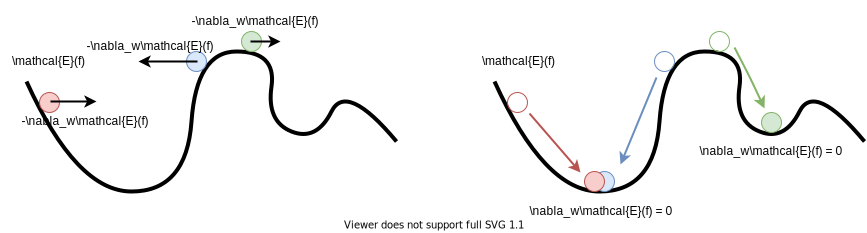

Fitting Supervised Models#
In the last section, we introduced the training, validation, and test sets. The training set is used for fitting a supervised model, while the validation and test sets are used for evaluating the model’s accuracy. In this section, we will discuss loss functions and how they are used to evaluate the accuracy of a model. We will also discuss how loss functions can be used to fit models to data.
Loss Functions#
A loss function measures the error between predictions made by the model (i.e. \(\hat{y}\)) and the true labels \(y\). Typically, loss functions are a scalar-valued functions that measure the “distance” of predictions from data, meaning the larger the value of the loss function, the worse the accuracy of the model. For individual predictions, the loss function is often denoted as a function \(E: \mathcal{Y} \times \mathcal{Y} \rightarrow \mathbb{R}\). For example, if \(y\) is a scalar quantity, the square error loss function on \(y\) is:
For a loss function to be effective, it must satisfy three properties:
Continuity: \(E(\hat{y},y)\) varies smoothly with \(y\) and \(\hat{y}\).
Non-Trivial Differentiability: The derivative of \(E(\hat{y},y)\) with respect to \(\hat{y}\) exists and is not zero everywhere.
Effective Monotonicity: If \(E(\hat{y},y) < E(\hat{y}',y)\) if \(\hat{y}\) is a better prediction of \(y\) than \(\hat{y}\)’.
Note that property 3 is somewhat subjective, but it is necessary to ensure that the “best” prediction of \(y\) is the one that minimizes \(E(\hat{y}, y)\). In addition to properties 1-3, we see that the square error loss function satisfies some other useful properties, (i.e. non-negativity: \(E \ge 0\), symmetry: \(E(\hat{y},y) = E(y,\hat{y})\), etc.). These properties are desirable, but is not all loss functions will have them. Ultimately, the kind of loss function we choose will depend on what kind of data \(y\) represents and the model we are using.
We now know how to measure the accuracy of a single prediction \(\hat{y} = f(\mathbf{x})\); however, a model \(f: \mathcal{X} \rightarrow \mathcal{Y}\) may make better better predictions on some data points \((\mathbf{x},y)\) than others. To evaluate a model on a dataset \(\{ (\mathbf{x}_n, y_n) \}_{n=1}^N\) with \(N\) datapoints, we use a model loss function, denoted \(\mathcal{E}(f)\). Often, \(\mathcal{E}(f)\) is simply the average of a loss function \(E\) evaluated on a dataset:
These are some commonly used loss functions used when \(y\) is a scalar (or vector) quantity:
Mean Square Error (MSE):
\[\mathcal{E}(f) = \frac{1}{N} \sum_{n=1}^N (f(\mathbf{x}_n) - y_n)^2\]Root Mean Square Error (RMSE):
\[\mathcal{E}(f) = \sqrt{\frac{1}{N} \sum_{n=1}^N (f(\mathbf{x}_n) - y_n)^2}\]Mean Absolute Error (MAE):
\[\mathcal{E}(f) = \frac{1}{N} \sum_{n=1}^N |f(\mathbf{x}_n) - y_n|\]Maximum Absolute Error:
\[\mathcal{E}(f) = \max_{n} |f(\mathbf{x}_n) - y_n|\]
Tip
The physicists in the room may recognize the RMSE as the \(\ell^2\) norm error (“L2”) and the MAE as the \(\ell^1\) norm error (“L1”). The maximum absolute error is sometimes defined as the \(\ell^\infty\) norm error (“L-infinity”). These names are also commonly used in the machine learning literature.
Fitting Models to Data#
The process of fitting models to data can sometimes be very complex, and the computational method for determining the fit is often specific the type of model being used. These computational methods are called learning algorithms, since they employ iterative procedures for gradually improving the fit of a model.
Since this workshop is not directed at computer scientists, we will not cover these computational methods in detail; however, having at least a cursory understanding of them is crucial in understanding how most models work. As a motivating example, let’s recall a simple 1D polynomial model with degree \(D\):
This model has \(N+1\) free parameters (\(w_0, w_2, ..., w_D\)) that must be optimized in order to best fit the data. These free parameters are called the weights of the model. We can also treat \(D\) as a parameter to be optimized; however it can be if \(D\) is too large (i.e. \(D \ge N-1\), where \(N\) is the size of the dataset of \((x,y)\) pairs) then there may be multiple best fits where \(\mathcal{E}(f) = 0\). Parameters like \(D\) that influence the number of weights in the model are called hyperparameters. These values are often held constant during the fitting process.
Suppose that we use the MSE loss function to determine the best fit of \(f(x)\) to a dataset \(\{ (x_n,y_n) \}_{n=1}^N\) consisting of \(N\) \(x\)-\(y\) pairs. Then, the model loss can be written in terms of the model weights \(w_0, w_1, ..., w_D\):
We find the best fit of \(f\) to the dataset by minimizing \(\mathcal{E}(f)\) with respect to the weights. At first, this task may seem quite daunting, especially since there are infinitely many weight configurations to try. Even if we tried one of \(n\) different configurations per weight, we would still need to search a space of \(D^n\) different weight configurations. Surely there must be a better way of searching this exponentially large space for the optimal weights. This is where learning algorithms come into play.
A learning algorithm is a computational procedure for gradually improving a model fit from some initial weight configuration to a weight configuration that produces a lower \(\mathcal{E}(f)\). By repeating this process over and over, \(\mathcal{E}(f)\) will eventually converge to a local minimum. For now, we will discuss the most commonly used learning algorithm: gradient descent.
Gradient Descent#
As its name suggests, gradient descent is a learning algorithm that minimizes \(\mathcal{E}(f)\) by descending the gradient of the loss function \(\mathcal{E}\) with respect to its weights. To denote the gradient of a model with respect to its weights, we use the shorthand:
Any loss function \(E(\hat{y},y)\) that satisfies properties 1-3 is continuous and differentiable, meaning \(\frac{\partial E}{\partial \hat{y}}\) exists. This means that we can compute the gradient of a loss function \(E\) with respect to the weights for a single data point \((\mathbf{x}, y)\) using chain rule:
Note that the first quantity in the product above is a scalar, and the second quantity is a vector, meaning the result is a vector. We can interpret \(\nabla_w E\) as a vector of weight “adjustments” that points in the direction of greatest increase in \(\mathcal{E}\) with respect to to the weights and the data point \((\mathbf{x},y)\). The magnitude of \(\nabla_w E\) can be interpreted as the “steepness” of the surface of \(E\) in the direction of greatest increase.
If the model loss function \(\mathcal{E}(f)\) is an average of the single datapoint loss \(E(f(\mathbf{x}),y)\) over a dataset \(\{ (\mathbf{x}_n,y_n) \}_{n=1}^N\), the linearity of the gradient operator implies that:
The vector \(\nabla_w \mathcal{E}(f)\) points in the direction of greatest increase of the model loss \(\mathcal{E}(f)\). Since our goal is to minimize \(\mathcal{E}(f)\), we should adjust the weights in the direction of \(-\nabla_w \mathcal{E}(f)\), thereby descending the gradient. We can think of gradient descent this as a time-stepped procedure, where the gradient with respect to the weight vector \(\mathbf{w} = \begin{bmatrix} w_0 & w_1 & ... & w_D \end{bmatrix}^T\) at time \(t\) is computed and used to update the weights for time \(t+1\):
This process is illustrated for a simple 2D vector of weights \(\mathbf{w} = \begin{bmatrix} w_0 & w_1 \end{bmatrix}\) below:

Tip
Here’s another one for the physicists in the room: If we interpret \(\mathcal{E}\) as a potential energy function within the \(D\)+1-dimensional space of weight configurations, we can interpret \(-\nabla_w \mathcal{E}(f)\) as proportional to the net “force” vector exerted on the current weight configuration by each datapoint. When the model fit converges to a local minimum of \(\mathcal{E}\), the system reaches a stable equilibrium where the net “force” on the weight configuration is zero. This is somewhat analogous to the dynamics of a ball rolling down a hill:

Ideally, we should expect \(\mathcal{E}(f)\) to gradually decrease with each timestep until \(-\nabla_w \mathcal{E}(f) \approx \mathbf{0}\), at which point \(\mathcal{E}(f)\) has attained a local minimum. Take note that at some points where \(\mathcal{E}(f)\) is steep, the magnitude of the gradient, \(\lVert -\nabla_w \mathcal{E}(f) \rVert\), can be quite large. This can sometimes cause the gradient descent procedure to completely overstep local minima and even increase \(\mathcal{E}(f)\) from last step. Problems can also be encountered when \(\lVert -\nabla_w \mathcal{E}(f) \rVert\) is very small, as many small steps may be required to reach the nearest minimum. To avoid these pathologies, we can set the changes in the weight vector \(\mathbf{w}\) to have a fixed magnitude \(\eta\):
The value of \(\eta\) is called the learning rate. Note that if \(\eta\) is set too high, then the model may overstep local minima, but if \(\eta\) is set too low, then the gradient descent may take a long time to converge. Choosing the right value of \(\eta\) is important for obtaining a good fit of the data.
Example: Fitting a Linear Model#
Let’s write some Python code that uses gradient descent to fit a 1D linear model (\(f(x) = w_0 + w_1x\)) to data with the MSE model loss function.
Let’s start by writing the functions necessary for gradient descent, namely \(E(\hat{y}, y), \partial E/ \partial \)\hat{y}\(, f(x)\), and \(\nabla_w f(x)\):
import numpy as np
def loss(yhat, y):
""" computes the square error loss """
return (yhat - y)**2
def loss_yhat_deriv(yhat, y):
""" computes loss dE/d yhat """
return 2*(yhat - y)
def linear_f(x,w):
""" computes linear model: yhat = w0 + w1*x """
yhat = w[0] + w[1]*x
return yhat
def linear_f_grad(x, w):
""" computes gradient of linear model: yhat = w0 + w1*x """
return np.array([ np.ones_like(x), x ])
Next, we write the gradient descent algorithm:
def gradient_descent(data_x, data_y, w,
learning_rate=0.002,
tolerance=0.00001,
max_steps=10**4):
# compute initial loss:
initial_loss = np.mean(loss(linear_f(data_x, w), data_y))
loss_history = [ initial_loss ]
for _ in range(max_steps):
# compute gradient of model loss:
grad_loss = np.mean(
loss_yhat_deriv(linear_f(data_x,w),data_y) * linear_f_grad(data_x,w),
axis=1)
# update weights:
w += -learning_rate*grad_loss / np.linalg.norm(-grad_loss)
# record loss after update:
step_loss = np.mean(loss(linear_f(data_x, w), data_y))
loss_history.append(step_loss)
# stop if the decrease in loss is small:
if (loss_history[-2] - loss_history[-1]) < tolerance:
break
return w, loss_history
To see how well our algorithm works, let’s see how well the model fits some 1D linear data. We will generate this data such that is is already approximately normalized (\(\mu_x \approx 0, \sigma_x \approx 1\)). Using the following code, we compare the weights learned though gradient descent with the theoretically optimal weights:
Show code cell source
# generate data with target weights:
w_target = np.array([ 2.5, 0.1 ])
data_x = np.linspace(-2,2, 20)
data_y = w_target[0] + w_target[1]*data_x
# initialize weights to 0:
w = np.array([0.0, 0.0])
# do gradient descent:
w, loss_history = gradient_descent(data_x, data_y, w)
# compare fitted weights with target
print('Optimal Weights:', w_target)
print('Gradient Descent Weights:', w)
Optimal Weights: [2.5 0.1]
Gradient Descent Weights: [2.49977044 0.10000066]
We observe that the weights are quite close to the optimal values. We can verify that \(\mathcal{E}(f)\) was minimized by plotting the loss_history returned by the gradient descent algorithm:
Show code cell source
import matplotlib.pyplot as plt
# plot loss history:
plt.figure(figsize=(6,1.5))
plt.grid()
plt.plot(loss_history)
plt.xlabel('Step $t$')
plt.ylabel('$\mathcal{E}(f)$ (MSE)')
plt.show()
Plotting the data and the estimated fit, we see that the fit is quite reasonable:
Show code cell source
x_pts = np.linspace(-2.1, 2.1, 1000)
y_pts = w[0] + w[1]*x_pts
plt.grid()
plt.scatter(data_x, data_y, label='Dataset')
plt.plot(x_pts, y_pts, 'g:', label='Linear model fit')
plt.legend()
plt.show()
Important
In this exercise, we did not apply normalization to the \(\mathbf{x}\) data, since the data was approximately normalized to begin with. Generally, it is a good idea to normalize data (transform \(\mathbf{x} \rightarrow \mathbf{z}\)) and then apply gradient descent to the normalized data. This ensures that the model is not too sensitive to any particular feature, resulting in a better fit.
Classification Loss Functions#
So far, we have only discussed loss functions used for when \(y\) is a scalar quantity. This is most often the case for regression problems, but what about classification problems, where \(\hat{y}\) can only be one of a finite number of classes? An intuitive loss function for classes is the so-called Kronecker delta function, given by:
The simplest model loss function for classification tasks is the classification accuracy:
While the classification accuracy may be useful for evaluating a classification model, we see that is uses the Kronecker delta loss, which only satisfies property 3 of effective loss functions. Due to the discrete nature of classes, fitting classification models using gradient descent may prove challenging unless we can make the loss function continuous.
We can make the loss continuous by by re-formulating the classifier model \(f(x)\) as one that predicts the probability of \(f(x)\) being a member of each class instead of the class directly. This re-frames the problem as logistic regression, which is a type of regression that deals with the prediction of probability distributions. For now, we will only consider the problem of binary (i.e. two-class) classification, where \(f(x)\) only needs to predict the probability of the first class.
For a binary logistic regression model \(f: \mathcal{X} \rightarrow [0,1]\), we could use any of the loss functions mentioned above to fit \(f\) to data points \((\mathbf{x},y)\) where \(y = 0\) for the first class and \(y = 1\) for the second class. However, it has been shown that logistic regression models trained by gradient descent can converge faster with the binary crossentropy loss (sometimes also called the log loss):
This loss function can be used to fit the binary logistic regression model to data. Note that in order to convert the probability estimates \(\hat{y}\) to discrete classifications, we simply select the class based on whether \(p > 0.5\) or \(p < 0.5\).
Exercises#
Exercise 1: Polynomial Regression
Let’s kick things up a notch and generalize our gradient descent algorithm to fit arbitrary degree polynomial models using the MSE loss function. This might seem difficult at first, but upon inspecting the gradient_descent function, we see that the only thing that we need to change is the linear_f_grad and linear_f function.
First, make a copy of the gradient_descent function and call it poly_gradient_descent, changing only the following lines:
# compute gradient of model loss:
grad_loss = np.mean(
loss_yhat_deriv(poly_f(data_x,w),data_y) * poly_f_grad(data_x,w),
axis=1)
...
# record loss after update:
step_loss = np.mean(loss(poly_f(data_x, w), data_y))
loss_history.append(step_loss)`
Above the new poly_gradient_descent function, add the following new functions, which are called within poly_gradient_descent:
def poly_f(x,w):
""" computes a polynomial model: yhat = w0 + w1*x + w2*x^2 + ... """
yhat = '<your code here>'
return yhat
def poly_f_grad(x, w):
""" computes gradient of a polynomial model """
grad_f = '<your code here>'
return grad_f
In poly_f(x,w) and poly_f_grad(x,w), you can assume that w is a 1D numpy array of length \(D+1\), (\(D\) is the degree of the polynomial) with weights in ascending order: \([ w_0, w_1, ...., w_D ]\). Your task is to determine what should go in the place of '<your code here>'.
Using your new polynomial gradient descent function, determine the weights of a degree 6 polynomial that fits the following data:
data_x = np.linspace(-2,2,100)
data_y = np.cos(x_data*np.pi)
Plot both the data and your fitted degree-6 polynomial. Don’t worry about normalization or splitting into train/validation/test sets here.
Solutions#
Exercise 1: Polynomial Regression#
Show code cell content
def poly_f(x,w):
""" computes a polynomial model: yhat = w0 + w1*x + w2*x^2 + ... """
yhat = sum( w[i] * x**i for i in range(len(w)) )
return yhat
def poly_f_grad(x, w):
""" computes gradient of a polynomial model """
grad_f = np.array([ x**i for i in range(len(w)) ])
return grad_f
def poly_gradient_descent(data_x, data_y, w,
learning_rate=0.002,
tolerance=1e-7,
max_steps=10**4):
""" Fits a n-degree polynomial model using gradient descent. """
# compute initial loss:
initial_loss = np.mean(loss(linear_f(data_x, w), data_y))
loss_history = [ initial_loss ]
for _ in range(max_steps):
# compute gradient of model loss:
grad_loss = np.mean(
loss_yhat_deriv(poly_f(data_x,w),data_y) * poly_f_grad(data_x,w),
axis=1)
# update weights:
w += -learning_rate*grad_loss / np.linalg.norm(-grad_loss)
# record loss after update:
step_loss = np.mean(loss(poly_f(data_x, w), data_y))
loss_history.append(step_loss)
# stop if the decrease in loss is small:
if (loss_history[-2] - loss_history[-1]) < tolerance:
break
return w, loss_history
# initialize the dataset:
data_x = np.linspace(-2,2,100)
data_y = np.cos(data_x*np.pi)
# initialize weights of a polynomial model:
poly_degree = 6
w = np.zeros(poly_degree+1)
# fit polynomial with gradient descent:
w, history = poly_gradient_descent(data_x, data_y, w, learning_rate=0.001, max_steps=10**5)
# plot data and polynomial fit:
plt.figure()
plt.grid()
plt.scatter(data_x, data_y, label='Dataset')
plt.plot(data_x, poly_f(data_x, w), 'g', label='Polynomial fit')
plt.legend()
plt.show()